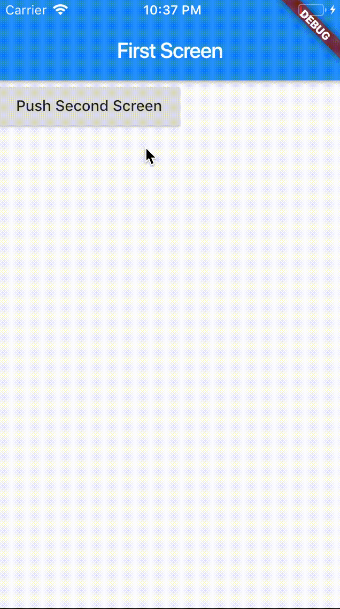
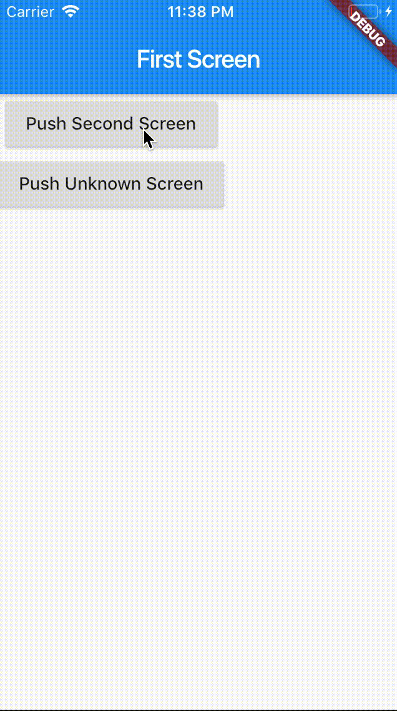
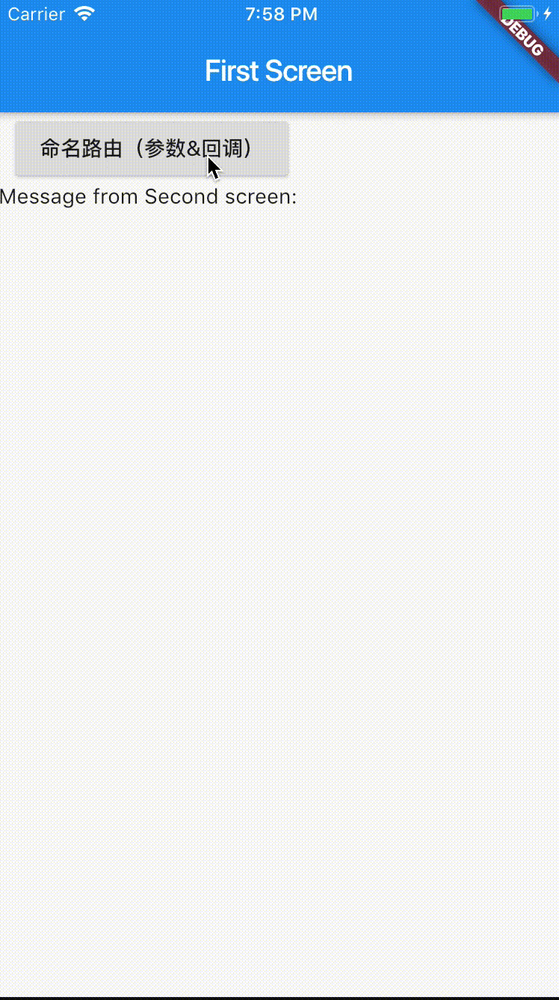

你好，我是陈航。
在上一篇文章中，我带你一起学习了如何在 Flutter 中实现跨组件数据传递。其中，InheritedWidget 适用于子 Widget 跨层共享父 Widget 数据的场景，如果子 Widget 还需要修改父 Widget 数据，则需要和 State 一起配套使用。而 Notification，则适用于父 Widget 监听子 Widget 事件的场景。对于没有父子关系的通信双方，我们还可以使用 EventBus 实现基于订阅 / 发布模式的机制实现数据交互。
如果说 UI 框架的视图元素的基本单位是组件，那应用程序的基本单位就是页面了。对于拥有多个页面的应用程序而言，如何从一个页面平滑地过渡到另一个页面，我们需要有一个统一的机制来管理页面之间的跳转，通常被称为路由管理或导航管理。
我们首先需要知道目标页面对象，在完成目标页面初始化后，用框架提供的方式打开它。比如，在 Android/iOS 中我们通常会初始化一个 Intent 或 ViewController，通过 startActivity 或 pushViewController 来打开一个新的页面；而在 React 中，我们使用 navigation 来管理所有页面，只要知道页面的名称，就可以立即导航到这个页面。
其实，Flutter 的路由管理也借鉴了这两种设计思路。那么，今天我们就来看看，如何在一个 Flutter 应用中管理不同页面的命名和过渡。
路由管理
在 Flutter 中，页面之间的跳转是通过 Route 和 Navigator 来管理的：
- Route 是页面的抽象，主要负责创建对应的界面，接收参数，响应 Navigator 打开和关闭；
- 而 Navigator 则会维护一个路由栈管理 Route，Route 打开即入栈，Route 关闭即出栈，还可以直接替换栈内的某一个 Route。
而根据是否需要提前注册页面标识符，Flutter 中的路由管理可以分为两种方式：
- 基本路由。无需提前注册，在页面切换时需要自己构造页面实例。
- 命名路由。需要提前注册页面标识符，在页面切换时通过标识符直接打开新的路由。
接下来，我们先一起看看基本路由这种管理方式吧。
基本路由
在 Flutter 中，基本路由的使用方法和 Android/iOS 打开新页面的方式非常相似。要导航到一个新的页面，我们需要创建一个 MaterialPageRoute 的实例，调用 Navigator.push 方法将新页面压到堆栈的顶部。
其中，MaterialPageRoute 是一种路由模板，定义了路由创建及切换过渡动画的相关配置，可以针对不同平台，实现与平台页面切换动画风格一致的路由切换动画。
而如果我们想返回上一个页面，则需要调用 Navigator.pop 方法从堆栈中删除这个页面。
下面的代码演示了基本路由的使用方法：在第一个页面的按钮事件中打开第二个页面，并在第二个页面的按钮事件中回退到第一个页面：
class FirstScreen extends StatelessWidget { @override Widget build(BuildContext context) { return RaisedButton( // 打开页面 onPressed: ()=> Navigator.push(context, MaterialPageRoute(builder: (context) => SecondScreen())); ); }} class SecondPage extends StatelessWidget { @override Widget build(BuildContext context) { return RaisedButton( // 回退页面 onPressed: ()=> Navigator.pop(context) ); }}运行一下代码，效果如下：

可以看到，基本路由的使用还是比较简单的。接下来，我们再看看命名路由的使用方法。
命名路由
基本路由使用方式相对简单灵活，适用于应用中页面不多的场景。而在应用中页面比较多的情况下，再使用基本路由方式，那么每次跳转到一个新的页面，我们都要手动创建 MaterialPageRoute 实例，初始化页面，然后调用 push 方法打开它，还是比较麻烦的。
所以，Flutter 提供了另外一种方式来简化路由管理，即命名路由。我们给页面起一个名字，然后就可以直接通过页面名字打开它了。这种方式简单直观，与 React 中的 navigation 使用方式类似。
要想通过名字来指定页面切换，我们必须先给应用程序 MaterialApp 提供一个页面名称映射规则，即路由表 routes，这样 Flutter 才知道名字与页面 Widget 的对应关系。
路由表实际上是一个 Map<String,WidgetBuilder>，其中 key 值对应页面名字，而 value 值则是一个 WidgetBuilder 回调函数，我们需要在这个函数中创建对应的页面。而一旦在路由表中定义好了页面名字，我们就可以使用 Navigator.pushNamed 来打开页面了。
下面的代码演示了命名路由的使用方法：在 MaterialApp 完成了页面的名字 second_page 及页面的初始化方法注册绑定，后续我们就可以在代码中以 second_page 这个名字打开页面了：
MaterialApp( ... // 注册路由 routes:{ "second_page":(context)=>SecondPage(), },);// 使用名字打开页面Navigator.pushNamed(context,"second_page");可以看到，命名路由的使用也很简单。
不过由于路由的注册和使用都采用字符串来标识，这就会带来一个隐患：如果我们打开了一个不存在的路由会怎么办？
也许你会想到，我们可以约定使用字符串常量去定义、使用路由，但我们无法避免通过接口数据下发的错误路由标识符场景。面对这种情况，无论是直接报错或是不响应错误路由，都不是一个用户体验良好的解决办法。
更好的办法是，对用户进行友好的错误提示，比如跳转到一个统一的 NotFoundScreen 页面，也方便我们对这类错误进行统一收集、上报。
在注册路由表时，Flutter 提供了 UnknownRoute 属性，我们可以对未知的路由标识符进行统一的页面跳转处理。
下面的代码演示了如何注册错误路由处理。和基本路由的使用方法类似，我们只需要返回一个固定的页面即可。
MaterialApp( ... // 注册路由 routes:{ "second_page":(context)=>SecondPage(), }, // 错误路由处理，统一返回 UnknownPage onUnknownRoute: (RouteSettings setting) => MaterialPageRoute(builder: (context) => UnknownPage()),); // 使用错误名字打开页面Navigator.pushNamed(context,"unknown_page");运行一下代码，可以看到，我们的应用不仅可以处理正确的页面路由标识，对错误的页面路由标识符也可以统一跳转到固定的错误处理页面了。

页面参数
与基本路由能够精确地控制目标页面初始化方式不同，命名路由只能通过字符串名字来初始化固定目标页面。为了解决不同场景下目标页面的初始化需求，Flutter 提供了路由参数的机制，可以在打开路由时传递相关参数，在目标页面通过 RouteSettings 来获取页面参数。
下面的代码演示了如何传递并获取参数：使用页面名称 second_page 打开页面时，传递了一个字符串参数，随后在 SecondPage 中，我们取出了这个参数，并将它展示在了文本中。
// 打开页面时传递字符串参数Navigator.of(context).pushNamed("second_page", arguments: "Hey"); class SecondPage extends StatelessWidget { @override Widget build(BuildContext context) { // 取出路由参数 String msg = ModalRoute.of(context).settings.arguments as String; return Text(msg); }}除了页面打开时需要传递参数，对于特定的页面，在其关闭时，也需要传递参数告知页面处理结果。
比如在电商场景下，我们会在用户把商品加入购物车时，打开登录页面让用户登录，而在登录操作完成之后，关闭登录页面返回到当前页面时，登录页面会告诉当前页面新的用户身份，当前页面则会用新的用户身份刷新页面。
与 Android 提供的 startActivityForResult 方法可以监听目标页面的处理结果类似，Flutter 也提供了返回参数的机制。在 push 目标页面时，可以设置目标页面关闭时监听函数，以获取返回参数；而目标页面可以在关闭路由时传递相关参数。
下面的代码演示了如何获取参数：在 SecondPage 页面关闭时，传递了一个字符串参数，随后在上一页监听函数中，我们取出了这个参数，并将它展示了出来。
class SecondPage extends StatelessWidget { @override Widget build(BuildContext context) { return Scaffold( body: Column( children: <Widget>[ Text('Message from first screen: $msg'), RaisedButton( child: Text('back'), // 页面关闭时传递参数 onPressed: ()=> Navigator.pop(context,"Hi") ) ] )); }} class _FirstPageState extends State<FirstPage> { String _msg=''; @override Widget build(BuildContext context) { return new Scaffold( body: Column(children: <Widget>[ RaisedButton( child: Text('命名路由（参数 & 回调）'), // 打开页面，并监听页面关闭时传递的参数 onPressed: ()=> Navigator.pushNamed(context, "third_page",arguments: "Hey").then((msg)=>setState(()=>_msg=msg)), ), Text('Message from Second screen: $_msg'), ],), ); }}运行一下，可以看到在关闭 SecondPage，重新回到 FirstPage 页面时，FirstPage 把接收到的 msg 参数展示了出来：

总结
好了，今天的分享就到这里。我们简单回顾一下今天的主要内容吧。
Flutter 提供了基本路由和命名路由两种方式，来管理页面间的跳转。其中，基本路由需要自己手动创建页面实例，通过 Navigator.push 完成页面跳转；而命名路由需要提前注册页面标识符和页面创建方法，通过 Navigator.pushNamed 传入标识符实现页面跳转。
对于命名路由，如果我们需要响应错误路由标识符，还需要一并注册 UnknownRoute。为了精细化控制路由切换，Flutter 提供了页面打开与页面关闭的参数机制，我们可以在页面创建和目标页面关闭时，取出相应的参数。
可以看到，关于路由导航，Flutter 综合了 Android、iOS 和 React 的特点，简洁而不失强大。
而在中大型应用中，我们通常会使用命名路由来管理页面间的切换。命名路由的最重要作用，就是建立了字符串标识符与各个页面之间的映射关系，使得各个页面之间完全解耦，应用内页面的切换只需要通过一个字符串标识符就可以搞定，为后期模块化打好基础。
我把今天分享所涉及的的知识点打包到了GitHub上，你可以下载工程到本地，多运行几次，从而加深对基本路由、命名路由以及路由参数具体用法的印象。
思考题
最后，我给你留下两个小作业吧。
- 对于基本路由，如何传递页面参数？
- 请实现一个计算页面，这个页面可以对前一个页面传入的 2 个数值参数进行求和，并在该页面关闭时告知上一页面计算的结果。
欢迎你在评论区给我留言分享你的观点，我会在下一篇文章中等待你！感谢你的收听，也欢迎你把这篇文章分享给更多的朋友一起阅读。

COMMUNITY NOTES
读者评论
其实我一直想知道这个课程的样例代码在哪里？之前见过有人留言中问过但是也没看到有回复具体地址。现在找那条留言也找不到了，其它课程都有对应的样例代码在github上面，如果有在每篇下面附加上代码地址不可以么？
对于基本路由，其实路由返回的就是那个新页面初始化的实例，所以可以在页面 Widget 定义变量，然后在路由返回，也就是实例化的时候传值进去。
在新建页面的时候通过构造函数传的参数
class MySecondPage extends StatelessWidget { String msg; MySecondPage({ Key key, this.msg }):super(key:key); @override Widget build(BuildContext context) { // TODO: implement build MyThreePage tsp = new MyThreePage(); //基本路由传递参数 tsp.msg = "我来自第二个页面"; return Scaffold( appBar: AppBar(title: Text("SecondPage"),), body: RaisedButton( child: Text("MyEvent Bus$msg"), onPressed: () { myEventBus.fire(MyCustomEvent("Hello World")); Navigator.pop(context); }, ), floatingActionButton: FloatingActionButton( child: Icon(Icons.pages), onPressed: (){ Navigator.push(context, MaterialPageRoute(builder: (context)=>tsp)); }, ), ); }}MySecondPage sp = new MySecondPage(); sp.msg = "我传给你了哈哈哈";onPressed: ()=>Navigator.push(context,MaterialPageRoute(builder: (context)=>sp)),可以通过这种方式传递
context 会细讲吗？ 感觉不是很懂
对于基本路由，如何传递页面参数？能过MaterialPageRoute 的 settings 属性。